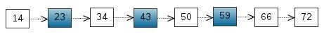
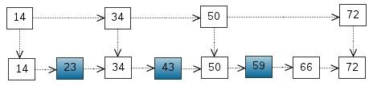
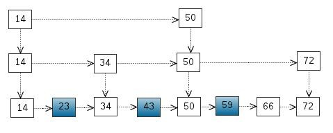
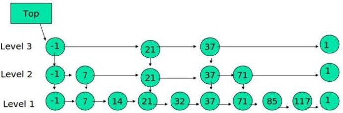
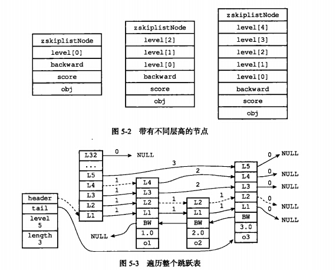

前言
用过sorted set的话，都知道sorted set是redis非常首欢迎的数据结构，Redis 有序集合和集合一样也是string类型元素的集合,且不允许重复的成员。不同的是每个元素都会关联一个double类型的分数。redis正是通过分数来为集合中的成员进行从小到大的排序。有序集合的成员是唯一的,但分数(score)却可以重复。
而sorted set的底层实现便是skiplist,支持平均O(n)，最坏O(n)的查找时间复杂度
跳表与红黑树?
虽然我们知道redis用skiplist用实现排序集,但了解过C++ STL的源码实现相关资料就会产生疑问,类似于redis的sorted set，STL的set,multiset,map,multimap底层均采用的RB-tree这里,这里skiplist与RB-Tree究竟有啥不一样,作者为何采用skiplist,它们有什么优缺点?在并行编程与利用并行硬件方面其特性表现如何？
红黑树
红黑树是一种平衡二叉搜索树，自动排序效果不错，可在平均时间复杂度O(logn)内完成查找，插入，删除等操作,其基本性质如下：
性质1. 节点是红色或黑色
性质2. 根是黑色
性质3. 所有叶子都是黑色（叶子是NIL节点）
性质4. 如果一个节点是红的，则它的两个儿子都是黑的
性质5. 从任一节点到其叶子的所有简单路径都包含相同数目的黑色节点。
关于红黑树插入删除的不同情况下树的调整可阅读STL源码解析。其实现过程还是非常繁杂的，而skiplist相对来说是比较简单的。
skiplist结构定义
|
|
跳表的实现原理
我们知道在一个单链有序表搜索的时候，查找成功的平均时间复杂度O(n+1/2)
从该有序表中搜索元素 < 23, 43, 59 > ，需要比较的次数分别为 < 2, 4, 6 >，总共比较的次数为 2 + 4 + 6 = 12 次

如果我们把一些节点提取出来作为索引,发现搜索次数减少

我们还可以再从一级索引提取一些元素出来，作为二级索引，变成如下结构

从中可以看出跳表的核心思想，其实是一种空间换时间的做法，通过每增加每个节点向前的指针，同时存储多层指针。跳跃列表是按层建造的。底层是一个普通的有序链表。每个更高层都充当下面列表的「快速跑道」，这里在层 i 中的元素按某个固定的概率 p (通常
为0.5或0.25)出现在层 i+1 中。平均起来，每个元素都在 1/(1-p) 个列表中出现, 而最高层的元素（通常是在跳跃列表前端的一个特殊的头元素）
在 O(log1/p n) 个列表中出现。我们知道红黑树充分利用了节点的索引性质来加速查找效率，跳表其实也含有这么一种思想在里面，充分利用节点索引

skiplist基本实现
基本函数
|
|
*@
重要实现函数解析
以下是插入操作的实现,先看个跳表整体详细结构图

看上图，我们知道跳表的插入实现和单链表的插入式类似的，只不过现在每个节点含有多层,非常需要找到每层对应的插入节点前后指针以及跨度
|
|
并行编程结构分析
红黑树在更新的时候牵涉较广范围的节点，其更新不能充分利用局部特性
红黑树在内存与cache共享写数据与同步的代价高
红黑树在顺序加锁上很难想单链表那样保证正确
设计数据结构在并行编程性能特性分析有两点：
第一：在并行编程方面,其性能应该考虑允许多线程在同一时间访问数据
第二：在并行硬件方面，最小化内存同步的代价
设计一个好的数据结构能够让不同的线程可以同时访问不同部分数据，并避免大的潜在的内存同步带来的开销
参考文献
《redis设计与实现》
http://blog.csdn.net/daniel_ustc/article/details/20218489?utm_source=tuicool&utm_medium=referral
http://www.drdobbs.com/parallel/choose-concurrency-friendly-data-structu/208801371?pgno=3